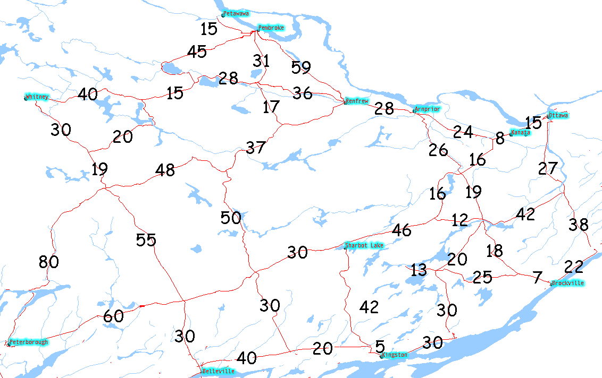

Download the archive Lab10.zip and extract the WeightGraph application. The application is similar to SimpleGraph except that it expects to read an edge-list from a file where the edges are weighted. The archive contains the airports' example from the textbook in the file airports.txt. The Graph is again stored as AdjacencyListGraph and the application simple prints all the vertices followed by all the edges for verification.
Study the Dijkstra implementation by Goodrich et al. The implementation follows closely our discussion in class. Notice that the algorithm assumes that the edges of the graph have been decorated with a key WEIGHT. Before constructing Dijkstra, you will need to make sure that the edges in your graph have been decorated. Note that the class Edge implements DecorablePosition which enables you to store a (Key,Value) pairs with an edge. You will need to add a line of code to void WeightGraph.read() to appropriately decorate the edge.
The program WeightGraph has a routine void printAllShortestDistances( String vert ) which currently does nothing. Please implement this routine by constructing a Dijkstra object and calling the execute method on it. After execution, the routine should print the distance between the source vertex and all other vertices with a name longer than 2 letters. In this way, you may define intermediate vertices for the graph but they will not be printed.
The image belows shows a simplified road map of eastern Ontario. Define a suitable graph for the roadmap (or part of it) which will allow you to find the shortest from all the named cities or towns. Notice that you need additionally vertices in-between the towns. If you use names with no more than two letters, they will not interfere with printing. Create a new textfile and find all shortest path from Ottawa with the application.
 © Queen's Printer for Ontario